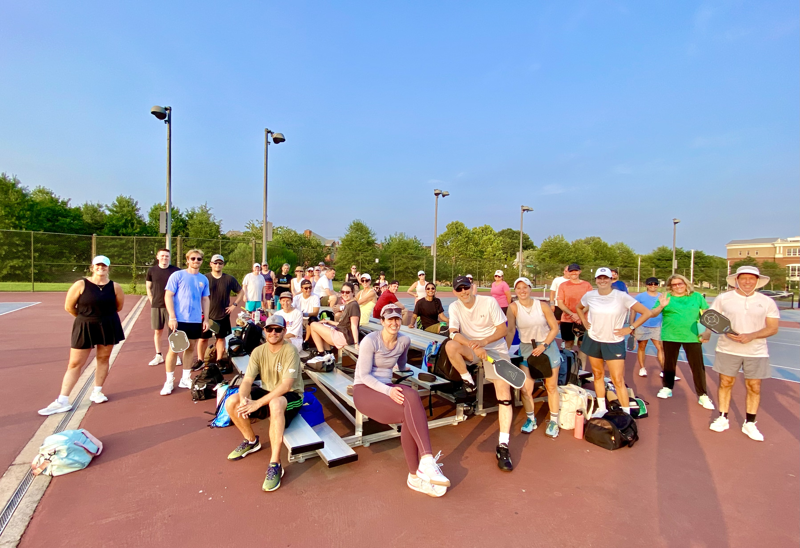

Community
A welcoming pickleball community for players of all skill levels.
Washington, DC
Bringing pickleball players together for leagues, clinics, tournaments, and social events in the Washington, DC area.

Community First
DCPL began with volunteer effort, taped courts, and a shared belief that pickleball should bring people together.
A welcoming pickleball community for players of all skill levels.
Competitive leagues, tournaments, and well-matched games for all skill levels.
Shared games. Lasting connections.

Our Story
In 2022, pickleball opportunities in Washington, DC were limited. Steve and Maya began hosting volunteer open play at East Potomac Tennis Center three nights a week. For nearly three years, they taped temporary courts before every session, creating a welcoming place where players from across the Washington metropolitan area could play, improve, and connect.
As more players joined, the need for a better way to organize games became clear. David developed DCPL's ladder system and the algorithm behind it, helping players find well-matched, competitive games. Together, Steve, Maya, and David founded DC Pickleball League in April 2023.
DCPL: The Story
DCPL was born from a simple problem: there were not enough places to play pickleball in Washington, DC.
In 2022, pickleball options in DC were limited—a few recreation centers with restricted hours, very few outdoor courts, and only a handful of places where players could regularly gather.
Steve, one of DC’s original pickleball players, had spent nearly two decades playing, competing in tournaments, and helping grow the sport. Maya joined those efforts as a volunteer, and together they began building a community around the game.
In Spring 2022, Maya was looking for a wall to hit against near her neighborhood. That brought her to East Potomac Tennis Center. A conversation about pickleball revealed an opportunity: using underused tennis space to create more places for the growing pickleball community.
In Fall 2022, Steve and Maya began hosting volunteer open play at the EPTC bubble three nights a week without dedicated pickleball courts. They taped courts for each session, organized players, and created a hub where groups from DC, Virginia, and Maryland could come together to play, improve, and connect.
For nearly three years, EPTC became the first home of the DC pickleball community, built through Steve and Maya’s volunteer effort.
As the community grew, the need for a better way to match players by skill level became clear. David joined the effort, bringing his background as a computer scientist and problem solver. David created DCPL’s ladder and algorithm, helping players find competitive, well-matched games.
Together, Steve, Maya, and David founded DC Pickleball League in April 2023.
Since then, DCPL has grown into a community with leagues, tournaments, clinics, open plays, and community events. When EPTC closed in 2024, DCPL adapted and continued at new locations, including Rock Creek Tennis Center and other facilities across the region. Today, the DCPL community includes nearly 5,000 subscribers and continues to grow.
What makes DCPL different is not just our leagues or our robust ladder. It is the people behind it — a community built through passion, resilience, and the belief that pickleball is about connection.
From those first taped courts to thousands of players across the region, DCPL continues to create opportunities for people to play, improve, and build friendships through the game we love.
Play With DCPL
Structured competition, balanced groups, and ladder standings.
Instruction for every skill level.
Join holiday gatherings, tournaments, and special community events that bring players together from across the Washington region—some attracting more than 200 participants.
The DCPL Ladder
DCPL’s ladders and ratings help players find well-matched games, track results, and see their progress over time.
View Ladder StandingsCommunity Gallery
Join the Community
Whether you're new to pickleball or an experienced player, there's a place for you in the DC Pickleball League community. Join our mailing list to stay informed about leagues, clinics, tournaments, open play, and community events.